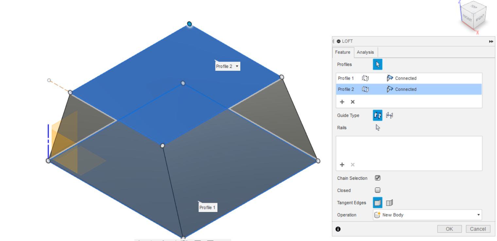
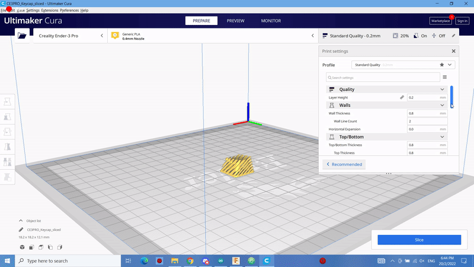

Final Project
Final Project 

(CLICK HERE TO GO STRAIGHT INTO MY PROJECT JOURNEY)
Project Title: Mechanical Keypad
It is a smaller keyboard that allows easier access to keys and shortcuts that are hard to reach.
-Keys (Function keys F1-F12)
-Shortcuts (Ctrl + C, Ctrl + P)
Assignable keys and rotary encoder
It will have a LED base to aid in its design.
It will also have a LED bar at the side to show when which button is pressed as I find that having a screen for that is unnecessary.
It will have 2 rotary encoders to control volume and zoom in and out.
Here are some reference pictures I used to better understand what I envision the final product would look like.
Colour palette reference

| CaD Design, Graphics | Case and Switch Plate |
| Laser Cutting | Case design |
| 3D Printing | Keycaps |
| Micro-controller | Read keypresses from keypad and send output to computer to press those keys, Control LEDS |
| Input Devices | Mechanical Switches |
| Output Devices | LED |
| Sn. | Qty | Item Description | Approx Cost |
| 1. | 1 | Arduino Pro Micro | $8 | 2. | 2 | Rotary Encoder | $2 |
| 3. | 4 | Gateron Milky Yellow | $1.20 |
| 4. | At least 17cm | NeoPixels | FabLab/$9.50 |
| 5. | 1 | White Acyrlic Sheet | FabLab |
| 6. | 1 | Clear/Translucent Acrylic | FabLab |
| 7. | 2 | Silver Encoder Knobs without standards | $4.20 |
| Total: $25.70 |
Rotary Encoder (Shopee)
Gateron Milky Yellow Switches (Shopee)
NeoPixels (Shopee)
Silver Encoder Knob (Shopee)
This initial step is me finding out more about the dimensions for different parts and how roughly big I have to make the container.
Dimensions for mechnical switches plate
(LINK 1) (LINK 2)From these links, I found out how why can the switches hole sometimes be in H shape or just a square which is for the H shape, it is to make sure that the swicthes are placed with the correct orreintation. And from the second link is where I got the thickness of my switch plate should be which is roughly 3mm.
(LINK 3)Using Maxr1998's project as reference, I looked into the dimensions he used like the spacing between each switch hole and how long he made his case.
This research into dimensions step is important as before designing in fusion360, I need to design my project to fit the components size as well. Although I am using someone else project as reference, I still used my own dimensions when needed like how I am increasing the size of my case.
First part of my project that I designed is the case. I will be going through what dimensions I used and how I got them along with what functions I used in fusion360.
I used this dimensions as from above, using Maxr1998, I really liked how minimalist his design was which when laser cutting I wouldn't have much problem.
I ended up extending the right side by 5mm as I was going to add a LED bar, thus the final dimensions are 88.5mm by 54mm
The dimensions is 33mm by 88.50mm
After combining both surfaces the dimension would change to 33mm by 82.50mm, and example of how to combine is below. As to why it is 33mm and not 36mm when compared to the side, I wanted the majority of the front view at the bottom clear acrylic to be mostly clear acrylic to I didn't want a interlocking design there, thus the bottom on this piece is flat.
The combine function has 2 selection that must be done, Target Body is the body that you wish to cut, Tool bodies is the body that will be cutting. Make sure to check keep tools so that the box wouldn't delete after combining.
The dimension is 36mm by 54mm. The hole placement has to be designed according to where the wire head will be and how big it is. I will be using a pro micro so my wire head will be a micro b plug which is about 10mm by 6mm. As for the height I measured the small breadboard with the pro micro on top and measured it from there, this may differ so alter the position as you wish.
This dimension is also the same as the bottom which is 88.5mm by 54mm. This design as i said before is based on Maxr1998's design. I changed the rotary encoder to a on off switch instead, which is why the hole dimension is bigger which is 16mm in diameter. If you wish to find out more about where I got the dimensions from, do look at the links above which have links of where I researched. There is also the additional bar which I added which is going to be where light from the NeoPixel can be seen through which is about 3mm wide and since I will be using 3 of them long it will be 28mm long.
After combining all the sides, this is what the final design will look like, as you can see the bottom from the front is all one piece so that the light design can be seen through it later on.

I uploaded to files to coreldraw and started to cut out the case. Using the setting which I got from online LINK 4
This are the parts I ended up with after cutting, the rotary encoder is changed to a on off switch due to needing one in our project and I did not have enough space to fit it in.
These are the engraving images I used. For engraving, set your laser cutter colour black lines to engraving settings since my images are black and white thats all I had to do. And then upload them to corelDraw as well before clicking print.
For this part of the design, I will be using this image as my reference for dimensions for the keycap.
I will now explain the functions and dimensions I used when using fusion360 for this process.
Using the rectangle function, the dimensions I used is 18.10mm by 18.10mm. I am starting the process from the bottom up.
This is the function that can set a different working plane through distance.
Set the distance to 9.39mm as that is the height of the keycap.
Next start a sketch on that plane that you just made, and draw another layer which is 16mm by 12.37mm.
use the loft function to connect the top layer and the bottom layer together.
Now use the fillet functions for both the top and bottom layer to smooth out the sides when lofting, the radius I used 1.5mm
After filleting, the look of the keycap now should look like this
Next use the shell function to remove the inside of the solid and have a 1mm wall thickness. It is ok if you would like to increase the wall thickness if you are scared that it might be too thin.
Now ONLY DO THIS STEP IF YOU HAVE FINALISED THE KEYCAP DESIGNING PROCESS as if cutting the keycap for a more fancy design, it can cut the stem of the keycap as well. For the diameter I used 5.54mm according the the reference above and for the cross it is 2 1.35mm by 4.10mm rectangles to form it.
Next I extruded the stem to the bottom of the keycap. I am doing this as I do not want my keycap to have inner surface issues when printing which may cause me the need of more time for this part of the project which is why my stem might be longer than actual products.
This step is optional. I am planning to make my keycap according to a design I found on Thingiverse(LINK 5) which is a website where people upload their 3D models which other people can use.
In this step I am setting up a line which is 45 degrees so that i can make a construction place at that angle later on.
Next using the contruction place on angle I clicked on the line which i previously set up and faced it in the direction of the keycap.
Now I repeated using make contruction plane from distance function for 2mm every interval and made sure all of the keycap is being overlapped
This is what the side view would look like.
Now by drawing a construction line on the bottom to act as my surface, I drew another 2mm up and made a rectangle that covered the entire keycap.
I then extruded the sketch by 1mm and now the keycap would look like this, repeat this for each layer.
These are the printer settings that I am using to print out the keycaps. the printing time was around 40 minutes for 1 keycap.
These are what the keycaps looked like after printing
I am using my own printer which is a ender 3 pro so the print quality may vary as you can see, my middle keycap at the bottom is print poorly however still usable.
I will be explaining the components I used from left to right and also why I connected them that way.
FIRST COMPONENT
On the far left I have a regular flip switch, I will actually be using a rocker switch instead but tinkerCAD doesn't have that component so I'm using this switch instead to represent it. The pins are connected to 5v and GND and it doesn't matter which way it is connected to the switch since it doesn't have polarity.
The reason I have this feature is because we are required to put a on off switch on our project so this is an optional feature as pulling out the usb cable from the computer would be the safest option. However while playing around with the connections on the pro micro, I found out that directly connecting the 5V to the GND would make the board enter a sleep state despite still being on and won't run the program uploaded to it.
SECOND COMPONENT
On the left of the breadboard, I have 4 push buttons which are acting as my mechanical switches in this tinkerCAD representation. The buttons are connected to 1 pin to GND and 1 pin to their own respective numbered pin. It is wired this way as when programming, I will be using the INPUT_PULLUP pin mode for recognizing when the pin is being pressed (Further explanation on the code will be below).
THRID COMPONENT
On the Left side, there is a 4 LED NeoPixel, on my actual board I am only using 3 as only that much can fit in my case vertically. On the NeoPixel there is 3 copper surfaces, where the red wire is connected to is the 5V pin, the black wire is to the GND pin and the blue wire is the DIV pin which is where the information is being sent from the board to the NeoPixel about what colour should be outputted.
This gif is just a quick summary of the code that I will explain below.
#include
#ifdef __AVR__
#include
#endif
#include
So first I included all the nessecary libraries which are for the keyboard presses and for neopixel
#define Up 3
#define Down 4
#define Left 2
#define Right 8
#define LED 7
This are the pins which I have used so I am naming them to make it easier to recognize when coding later. The directions I used are the switch's pins and LED is the neopixel
int state1 = HIGH;
int state2 = HIGH;
int state3 = HIGH;
int state4 = HIGH;
Next I set up 4 states for each switch so that when testing later the serial monitor will only have 1 output and not constently read and spam serial print later.
Adafruit_NeoPixel bar = Adafruit_NeoPixel(3, LED, NEO_GRB + NEO_KHZ800);
Next I set the parameters of the NeoPixel, the first parameter is the number of LEDs that you are using, the second parameter is which pin you are using. CHANGE BAR INFRONT IF YOU DO NOT WANT TO NAME IT THAT.
void setup() {
bar.begin();
bar.show();
Keyboard.begin();
pinMode (2, INPUT_PULLUP);
pinMode (3, INPUT_PULLUP);
pinMode (4, INPUT_PULLUP);
pinMode (8, INPUT_PULLUP);
}
Next in Void setup, (name of NeoPixel in my case its bar) begin is to activate the neopixel and show is to make the neopixel set at nothing to start.
Next the switches pins are set to input pull up, this is to save the trouble of only needing 2 connections to allow the arduino to know when it is pressed.
How it works is when there when the switch is not pressed, the pins are reading HIGH, while when it is pressed which is when the GND is connected, the pins will read LOW.
void loop() {
if (digitalRead(Up)==LOW)
{if (state1 == HIGH)
{Keyboard.press(KEY_UP_ARROW);
Serial.println("UP");
for(int i=-1; i<3; i++) {
bar.setPixelColor(i, bar.Color(255, 141, 241));
bar.show(); // Send the updated pixel colors to the hardware.
delay(30); // Pause before next pass through loop
}
state1 = LOW;
}
bar.setPixelColor(0, bar.Color(255, 141, 241));
bar.setPixelColor(1, bar.Color(255, 141, 241));
bar.setPixelColor(2, bar.Color(255, 141, 241));
bar.show();
}
if (digitalRead(Up)==HIGH) {if (state1 == LOW){ Keyboard.release(KEY_UP_ARROW);
Serial.println("NOTHING");
bar.clear();
bar.show();}
state1 = HIGH;}
if (digitalRead(Down)==LOW)
{if (state2 == HIGH)
{Keyboard.press(KEY_DOWN_ARROW);
Serial.println("DOWN");
for(int i=-1; i<3; i++) {
bar.setPixelColor(i, bar.Color(251, 251, 145));
bar.show(); // Send the updated pixel colors to the hardware.
delay(30); // Pause before next pass through loop
}
This part long so I will cut short on my explaination. Using digitalRead on 1 of the pins, it will check whether the pin is in HIGH or LOW state. Next it will check what state it is in, after completing the loop once, it won't loop again unless the switch is released and pressed again. However if held, the keypress will continue to run and the neopixel will also stay on to represent it.
If it was only clicked once, the key will be played once and the neopixel will only flash it first to third pixel once. I then repeated this code 4 times with different key presses for each switch and have different colours so it can differentiated. The functions I have put in are Copy, paste, Arrow up and Arrow down.
Make sure to change the keys you want to be pressed.
Since I was unable to test my code using TinkerCAD, I used the serial monitor instead to check whether the key was being pressed and whether the output for neopixel and key was correct.
So the first step is to solder the components to the schemetic above.
Next is to assemble the case partially without the top piece yet. (Use any method e.g glue, hot glue, tape)
Next is to assemble the neopixel.
I have 2 black wires on the breadboard is to extend the number of GND pins
Assemble the switches and any other components.
But with this step I had to use tweezers to slot the wires in which I was quite lucky with but this step could be improved!
Now just close the box and enjoy the new keypad
- Presentation Slide
- Presentation Video
LINK to video
- Ownership Card
- Conclusion
There were many things that I could've improved on but I just didn't have much time to commit to it.
E.G
- A better case design (Mine is too simple)
- Could have printed better quality keycaps
- Could have improve my physical wiring layout
- Could have used case in programe so that I can include more functions
- Could have made 2 layers so that bottom layer can have a constantly on NeoPixel to make project look nicer
Though overall this was a good experience for future project that could better plan everything so that the final look would feel more impressive.
And with that I have completed the EP1000 course and applied the programs I have learnt to use and designed my very own project and completed it.